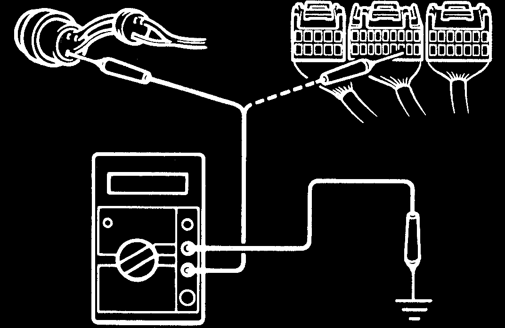
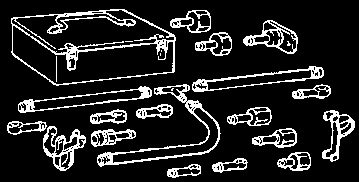

IN-1
INTRODUCTION
-
HOW TO USE THIS MANUAL
HOW TO USE THIS MANUAL
IN01O-08
GENERAL INFORMATION
1.
INDEX
An INDEX is provided on the first page of each section to guide you to the item to be repaired. To assist you in finding your way through the manual, the section title and major heading are given at the top of every page.
2.
PRECAUTION
At the beginning of each section, a PRECAUTION is given that pertains to all repair operations contained in that section.
Read these precautions before starting any repair task.
3.
TROUBLESHOOTING
TROUBLESHOOTING tables are included for each system to help you diagnose the problem and find the cause. The
fundamentals of how to proceed with troubleshooting are described on page IN-17 .
Be sure to read this before performing troubleshooting.
4.
PREPARATION
Preparation
lists the SST (Special Service Tools), recommended tools, equipment, lubricant and SSM (Special
Service Materials) which should be prepared before beginning the operation and explains the purpose of each one.
5.
REPAIR PROCEDURES
Most
repair operations begin with an overview illustration. It identifies the components and shows how the parts fit together.
Example:
Filler Cap
Float
Clevis Pin
Clip
Gasket
Reservoir Tank
Boot
Grommet
If you paid for the content in this manual – you were screwed!
Download this and more for free using BitTorrent!
Slotted Spring Pin
12 (120, 9)
Clevis
15 (155, 11)
Snap Ring
Washer
Lock Nut
Push Rod
Piston
Cylinder
N·m (kgf·cm, ft·lbf) : Specified torque
Non-reusable part
N17080
2002 4RUNNER (RM887U)
Author:
Date:
1
IN-2
INTRODUCTION
-
HOW TO USE THIS MANUAL
The procedures are presented in a step-by-step format:
The illustration shows what to do and where to do it.
The task heading tells what to do.
The detailed text tells how to perform the task and gives other information such as specifications and warnings.
Example:
Task heading : what to do
21. CHECK PISTON STROKE OF OVERDRIVE BRAKE
(a)
Place SST and a dial indicator onto the overdrive brake pis-
ton as shown in the illustration.
SST 09350-30020 (09350-06120)
Illustration:
what to do and where
Set part No.
Component part No.
Detailed text :
how to do task
(b)
Measure the stroke applying and releasing the compressed
air (392 785 kPa, 4 8 kgf/cm2 or 57 114 psi) as shown
in the illustration.
Piston stroke: 1.40 1.70 mm (0.0551 0.0669 in.) Specification
This format provides the experienced technician with a FAST TRACK to the information needed. The upper case task heading can be read at a glance when necessary, and the text below it provides detailed information. Important specifications and warnings always stand out in bold type.
6.
REFERENCES
References have been kept to a minimum. However, when they are required you are given the page to refer to.
7.
SPECIFICATIONS
Specifications are presented in bold type throughout the text where needed. You never have to leave the procedure to look up your specifications. They are also found in Service Specifications section for quick ref-If you paid for the content in this manual – you were screwed!
Download this and more for free using BitTorrent!
erence.
8.
CAUTIONS, NOTICES, HINTS:
CAUTIONS are presented in bold type, and indicate there is a possibility of injury to you or other people.
NOTICES are also presented in bold type, and indicate the possibility of damage to the components being repaired.
HINTS are separated from the text but do not appear in bold. They provide additional information to help you perform the repair efficiently.
9.
SI UNIT
The UNITS given in this manual are primarily expressed according to the SI UNIT (International System of Unit), and alternately expressed in the metric system and in the English System.
Example:
Torque: 30 N·m (310 kgf·cm, 22 ft·lbf)
2002 4RUNNER (RM887U)
Author:
Date:
2
IN-3
INTRODUCTION
-
IDENTIFICATION INFORMATION
IDENTIFICATION INFORMATION
IN0I7-01
VEHICLE IDENTIFICATION AND
ENGINE SERIAL NUMBER
1.
VEHICLE IDENTIFICATION NUMBER
A
The vehicle identification number is stamped on the vehicle
identification number plate and the certification label, as shown in the illustration.
A: Vehicle Identification Number Plate
B: Certification Label
B
N17729
2.
ENGINE SERIAL NUMBER
The engine serial number is stamped on the engine block as
shown in the illustration.
N17731
2002 4RUNNER (RM887U)
Author:
Date:
3
IN-4
INTRODUCTION
-
REPAIR INSTRUCTIONS
REPAIR INSTRUCTIONS
IN078-03
GENERAL INFORMATION
BASIC REPAIR HINT
(a)
Use fender, seat and floor covers to keep the vehicle
clean and prevent damage.
(b)
During disassembly, keep parts in the appropriate order
to facilitate reassembly.
(c)
Installation and removal of battery terminal:
FI1066
(1)
Before performing electrical work, disconnect the
negative (-) terminal cable from the battery.
(2)
If it is necessary to disconnect the battery for in-
spection or repair, first disconnect the negative (-)
terminal cable.
(3)
When disconnecting the terminal cable, to prevent
damage to battery terminal, loosen the cable nut
and raise the cable straight up without twisting or
prying it.
(4)
Clean the battery terminals and cable ends with a
clean shop rag. Do not scrape them with a file or oth-
er abrasive objects.
(5)
Install the cable ends to the battery terminals after
loosening the nut and tighten the nut after installa-
tion. Do not use a hammer to tap the cable ends
onto the terminals.
(6)
Be sure the cover for the positive (+) terminal is
properly in place.
(d)
Check hose and wiring connectors to make sure that they
are connected securely and correctly.
(e)
Non-reusable parts
(1)
Always replace cotter pins, gaskets, O-rings, oil
seals, etc. with new ones.
(2)
Non-reusable parts are indicated in the component
illustrations by the ”” symbol.
(f)
Precoated parts
Precoated parts are bolts, nuts, etc. that are coated with
a seal lock adhesive at the factory.
(1)
If a precoated part is retightened, loosened or
caused to move in any way, it must be recoated with
the specified adhesive.
(2)
When reusing precoated parts, clean off the old
Seal Lock Adhesive
adhesive and dry with compressed air. Then apply
Z11554
the specified seal lock adhesive to the bolt, nut or
threads.
2002 4RUNNER (RM887U)
Author:
Date:
4
IN-5
INTRODUCTION
-
REPAIR INSTRUCTIONS
(3)
Precoated parts are indicated in the component il-
lustrations by the ”” symbol.
(g)
When necessary, use a sealer on gaskets to prevent
leaks.
(h)
Carefully observe all specifications for bolt tightening
torques. Always use a torque wrench.
(i)
Use of special service tools (SST) and special service ma-
terials (SSM) may be required, depending on the nature
of the repair. Be sure to use SST and SSM where speci-
fied and follow the proper work procedure. A list of SST
and SSM can be found in the Preparation section in this
manual.
(j)
When replacing fuses, be sure the new fuse has the cor-
Medium Current Fuse and High Current Fuse
rect amperage rating. DO NOT exceed the rating or use
Equal Amperage Rating
one with a lower rating.
BE1367
Illustration
Symbol
Part Name
Abbreviation
FUSE
FUSE
MEDIUM CURRENT FUSE
M-FUSE
HIGH CURRENT FUSE
H-FUSE
FUSIBLE LINK
FL
CIRCUIT BREAKER
CB
V00076
2002 4RUNNER (RM887U)
Author:
Date:
5
IN-6
INTRODUCTION
-
REPAIR INSTRUCTIONS
(k)
Care must be taken when jacking up and supporting the
vehicle. Be sure to lift and support the vehicle at the prop-
er locations (See page IN-8 ).
Cancel the parking brake on the level place and
shift the transmission in Neutral (or N position).
When jacking up the front wheels of the vehicle, at
first place stoppers behind the rear wheels.
When jacking up the rear wheels of the vehicle, at
first place stoppers before the front wheels.
When either the front or rear wheels only should be
jacked up, set rigid racks and place stoppers in front
and behind the other wheels on the ground.
After the vehicle is jacked up, be sure to support it
on rigid racks. It is extremely dangerous to do any
work on a vehicle raised on a jack alone, even for
a small job that can be finished quickly.
(l)
Observe the following precautions to avoid damage to the
following parts:
(1)
Do not open the cover or case of the ECU unless
absolutely necessary. (If the IC terminals are
touched, the IC may be destroyed by static electric-
ity.)
(2)
To disconnect vacuum hoses, pull off the end, not
WRONG
CORRECT
the middle of the hose.
IN0253
(3)
To pull apart electrical connectors, pull on the con-
WRONG
CORRECT
nector itself, not the wires.
(4)
Be careful not to drop electrical components, such
as sensors or relays. If they are dropped on a hard
floor, they should be replaced and not reused.
(5)
When steam cleaning an engine, protect the elec-
tronic components, air filter and emission-related
components from water.
IN0252
2002 4RUNNER (RM887U)
Author:
Date:
6
IN-7
INTRODUCTION
-
REPAIR INSTRUCTIONS
(6)
Never use an impact wrench to remove or install
temperature switches or temperature sensors.
(7)
When checking continuity at the wire connector, in-
sert the tester probe carefully to prevent terminals
from bending.
(8)
When using a vacuum gauge, never force the hose
onto a connector that is too large. Use a step-down
adapter for adjustment. Once the hose has been
stretched, it may leak air.
Example
(m)
Installation and removal of vacuum hose:
(1)
When disconnecting vacuum hoses, use tags to
identify where they should be reconnected to.
(2)
After completing a job, double check that the vacu-
um hoses are properly connected. A label under the
hood shows the proper layout.
(n)
Bleeding of hydraulic brake booster:
When repairing the hydraulic brake booster or ABS,
IN0002
TRAC and VSC system, bleeding the air out of the hy-
draulic brake booster (See page BR-4 ).
(o)
Unless otherwise stated, all resistance is measured at an
ambient temperature of 20°C (68°F). Because the resis-
tance may be outside specifications if measured at high
temperatures immediately after the vehicle has been run-
ning, measurement should be made when the engine has
cooled down.
2002 4RUNNER (RM887U)
Author:
Date:
7
IN-8
INTRODUCTION
-
REPAIR INSTRUCTIONS
IN004-04
VEHICLE LIFT AND SUPPORT LOCATIONS
Front
*1
*2
JACK POSITION
Front
Center of crossmember
Rear
Center of rear axle housing
CAUTION:
When jacking-up the front and rear make sure the car is
not carrying any extra eight.
SUPPORT POSITION
Safety stand
Swing arm type lift
*1: Support position when equipping without side step.
*2: Support position when equipping with side step.
B01542
2002 4RUNNER (RM887U)
Author:
Date:
8
IN-9
INTRODUCTION
-
FOR ALL OF VEHICLES
FOR ALL OF VEHICLES
IN0I8-01
PRECAUTION
1.
FOR VEHICLES EQUIPPED WITH SRS AIRBAG
(a)
The 4RUNNER is equipped with an SRS (Supplemental
Restraint System), such as the driver airbag, front pas-
senger airbag and seat belt pretensioner.
Failure to carry out service operations in the correct se-
quence could cause the supplemental restraint system to
unexpectedly deploy during servicing, possibly leading to
a serious accident.
Further, if a mistake is made in servicing the supplemental
restraint system, it is possible the SRS may fail to operate
when required. Before servicing (including removal or
installation of parts, inspection or replacement), be sure
to read the following items carefully, then follow the cor-
rect procedure described in this manual.
(b)
GENERAL NOTICE
Negative Cable
(1)
Malfunction symptoms of the supplemental re-
straint system are difficult to confirm, so the diag-
nostic trouble codes become the most important
source of information when troubleshooting. When
troubleshooting the supplemental restraint system,
always inspect the diagnostic trouble codes before
disconnecting the battery (See page DI-377 ).
BO4111
(2)
Work must be started after 90 seconds from the
time the ignition switch is turned to the ”LOCK” posi-
tion and the negative (-) terminal cable is discon-
nected from the battery (The supplemental restraint
system is equipped with a back-up power source
so that if work is started within 90 seconds of discon-
necting the negative (-) terminal cable from the bat-
tery, the SRS may deploy.).
When the negative (-) terminal cable is discon-
nected from the battery, memory of the clock and
audio systems will be cancelled. So before starting
work, make a record of the contents memorized by
the each memory system. Then when work is fin-
ished, reset the clock and audio systems as before.
To avoid erasing the memory of each memory sys-
tem, never use a back-up power supply from anoth-
er battery.
2002 4RUNNER (RM887U)
Author:
Date:
9
IN-10
INTRODUCTION
-
FOR ALL OF VEHICLES
(3)
Even in cases of a minor collision where the SRS
does not deploy, the steering wheel pad, front pas-
senger’s airbag assembly and seat belt pretension-
er should be inspected (See page RS-12 , RS-26
and BO-1 19).
(4)
Never use SRS parts from another vehicle. When
replacing parts, replace them with new parts.
(5)
Before repairs, remove the airbag sensor if shocks
are likely to be applied to the sensor during repairs.
(6)
Never disassemble and repair the airbag sensor as-
sembly, steering wheel pad, front passenger air bag
or seat belt pretensioner.
(7)
If the airbag sensor assembly, steering wheel pad,
front passenger airbag or seat belt pretensioner has
been dropped, or if there are cracks, dents or other
defects in the case, bracket or connector, replace
them with new ones.
(8)
Do not directly expose the airbag sensor assembly,
steering wheel pad, front passenger airbag or seat
belt pretensioner directly to hot air or flames.
(9)
Use a volt/ohmmeter with high impedance (10 kΩ/V
minimum) for troubleshooting of the electrical cir-
cuit.
(10) Information labels are attached to the periphery of
the SRS components. Follow the instructions on
the notices.
(11) After work on the supplemental restraint system is
completed, check the SRS warning light (See page
(c)
SPIRAL CABLE (in Combination Switch)
The steering wheel must be fitted correctly to the steering
column with the spiral cable at the neutral position, other-
wise cable disconnection and other troubles may result.
Refer to SR-20 concerning correct steering wheel installation.
Marks
F04784
2002 4RUNNER (RM887U)
Author:
Date:
10
IN-1 1
INTRODUCTION
-
FOR ALL OF VEHICLES
(d)
STEERING WHEEL PAD (with Airbag)
(1)
When removing the steering wheel pad or handling
a new steering wheel pad, it should be placed with
the pad top surface facing up.
Storing the pad with its metallic surface facing up-
ward may lead to a serious accident if the airbag in-
flates for some reason. In addition do not store a
steering wheel pad on top of another one.
(2)
Never measure the resistance of the airbag squib.
(This may cause the airbag to deploy, which is very
dangerous.)
(3)
Grease should not be applied to the steering wheel
pad and the pad should not be cleaned with deter-
gents of any kind.
(4)
Store the steering wheel pad where the ambient
temperature remains below 93°C (200°F), without
high humidity and away from electrical noise.
(5)
When using electric welding, first disconnect the air-
bag connector (yellow color and 2 pins) under the
steering column near the combination switch con-
nector before starting work.
(6)
When disposing of a vehicle or the steering wheel
pad alone, the airbag should be deployed using an
SST before disposal (See page RS-14 ).
Carry out the operation in a safe place away from
electrical noise.
Example:
Correct
Wrong
B01541
Example:
Z13950
2002 4RUNNER (RM887U)
Author:
Date:
11
IN-12
INTRODUCTION
-
FOR ALL OF VEHICLES
(e)
FRONT PASSENGER AIRBAG ASSEMBLY
(1)
Always store a removed or new front passenger air-
bag assembly with the airbag deployment direction
facing up.
Storing the airbag assembly with the airbag deploy-
ment direction facing down could cause a serious
accident if the airbag deploys.
(2)
Never measure the resistance of the airbag squib.
(This may cause the airbag to deploy, which is very
dangerous.)
(3)
Grease should not be applied to the front passen-
ger airbag assembly and the airbag door should not
be cleaned with detergents of any kind.
(4)
Store the airbag assembly where the ambient tem-
perature remains below 93°C (200°F), without high
humidity and away from electrical noise.
(5)
When using electric welding, first disconnect the air-
bag connector (yellow color and 2 pins) installed on
assembly before starting work.
(6)
When disposing of a vehicle or the airbag assembly
alone, the airbag should be deployed using an SST
before disposal (See page RS-14 ).
Perform the operation in a safe place away from
electrical noise.
Example:
Correct
Wrong
H07371
Example:
Z13951
2002 4RUNNER (RM887U)
Author:
Date:
12
IN-13
INTRODUCTION
-
FOR ALL OF VEHICLES
(f)
SEAT BELT PRETENSIONER
(1)
Never measure the resistance of the seat belt pre-
tensioner. (This may cause the seat belt pretension-
er to activate which is very dangerous.)
(2)
Never disassemble the seat belt pretensioner.
(3)
Never install the seat belt pretensioner in another
vehicle.
(4)
Store the seat belt pretensioner where the ambient
temperature remains below 80°C (176°F) and
away from electrical noise without high humidity.
(5)
When using electric welding, first disconnect the
connector (yellow color and 2 pins) before starting
work.
(6)
When disposing of a vehicle or the seat belt preten-
sioner alone, the seat belt pretensioner should be
activated before disposal (See page BO-123 ).
Perform the operation in a safe place away from
electrical noise.
(7)
The seat belt pretensioner is hot after activation, so
let it cool down sufficiently before the disposal.
However never apply water to the seat belt preten-
sioner.
Example:
B04210
2002 4RUNNER (RM887U)
Author:
Date:
13
INTRODUCTION
-
FOR ALL OF VEHICLES
(g)
AIRBAG SENSOR ASSEMBLY
(1)
Never reuse the airbag sensor assembly involved
in a collision when the SRS has deployed.
(2)
The connectors to the airbag sensor assembly
should be connected or disconnected with the sen-
sor mounted on the floor. If the connectors are con-
nected or disconnected while the airbag sensor as-
sembly is not mounted to the floor, it could cause
undesired ignition of the supplemental restraint sys-
tem.
(3)
Work must be started after 90 seconds from the
time the ignition switch is turned to the ”LOCK” posi-
tion and the negative (-) terminal cable is discon-
nected from the battery, even if only loosening the
set bolts of the airbag sensor assembly.
(h)
WIRE HARNESS AND CONNECTOR
The SRS wire harness is integrated with the instrument
panel wire harness assembly. All the connectors in the
system are a standard yellow color. If the SRS wire har-
ness becomes disconnected or the connector becomes
broken due to an accident, etc., repair or replace it as
shown on page RS-47 .
2002 4RUNNER (RM887U)
Author:
Date:
14
INTRODUCTION
-
FOR ALL OF VEHICLES
2.
FOR VEHICLES EQUIPPED WITH A CATALYTIC CONVERTER
CAUTION:
If large amount of unburned gasoline flows into the converter, it may overheat and create a fire hazard. To prevent this, observe the following precautions and explain them to your customer.
(a)
Use only unleaded gasoline.
(b)
Avoid prolonged idling.
Avoid running the engine at idle speed for more than 20 minutes.
(c)
Avoid spark jump test.
(1)
Perform spark jump test only when absolutely necessary. Perform this test as rapidly as possible.
(2)
While testing, never race the engine.
(d)
Avoid prolonged engine compression measurement.
Engine compression tests must be done as rapidly as possible.
(e)
Do not run engine when fuel tank is nearly empty.
This may cause the engine to misfire and create an extra load on the converter.
(f)
Avoid coasting with ignition turned off.
(g)
Do not dispose of used catalyst along with parts contaminated with gasoline or oil.
3.
IF VEHICLE IS EQUIPPED WITH MOBILE COMMUNICATION SYSTEM
For vehicles with mobile communication systems such as two-way radios and cellular telephones, observe the following precautions.
(1)
Install the antenna as far as possible away from the ECU and sensors of the vehicle’s electronic system.
(2)
Install the antenna feeder at least 20 cm (7.87 in.) away from the ECU and sensors of the vehicle’s electronic systems. For details about ECU and sensors locations, refer to the section on the applicable component.
(3)
Avoid winding the antenna feeder together with other wiring as much as possible, and also avoid running the antenna feeder parallel with other wire harness.
(4)
Check that the antenna and feeder are correctly adjusted.
(5)
Do not install powerful mobile communications system.
4.
FOR USING OBD II SCAN TOOL OR TOYOTA HAND-HELD TESTER
CAUTION:
Observe the following for safety reasons:
Before using the OBD II scan tool or TOYOTA hand-held tester, the OBD II scan tool’s instruction book or TOYOTA hand-held tester’s operator manual should be read thoroughly.
Be sure to route all cables securely when driving with the OBD II scan tool or TOYOTA hand-held tester connected to the vehicle. (i.e. Keep cables away from feet, pedals, steering wheel and shift lever.)
Two persons are required when test driving with the OBD II scan tool or TOYOTA hand-held tester, one person to drive the vehicle and one person to operate the OBD II scan tool or TOYOTA hand-held tester.
2002 4RUNNER (RM887U)
Author:
Date:
15
IN-16
INTRODUCTION
-
FOR ALL OF VEHICLES
5.
FOR VEHICLES EQUIPPED WITH VEHICLE SKID
CONTROL (VSC) SYSTEM
NOTICE:
Even if TRAC is initially OFF, it automatically be-
comes ON when the vehicle speed becomes about 30
km/h (19 mph) or more. Therefore, please drive in the
test mode to avoid dangerous situations caused by
the TRAC control.
VSC/ABS may be failed when the vehicle is driven on
the two-wheel chassis dynamo. Therefore, after driv-
ing on the chassis dynamo, please clear DTC before
normal driving. Please refer to the page DI-224 for the
method of clearing DTC.
Fasten the vehicle with the lock chain.
(a)
Confirm VSC system is OFF.
DLC1
E1
(1)
Turn the ignition switch OFF.
(2)
Using SST, connect terminals Ts and E1 of DLC1.
SST
09843-18020
(3)
Start the engine.
Ts
F02201
(4)
Check that the VSC TRAC warning light blinks.
(5)
After the measurement, remove the SST and re-
start the engine. At this time make sure that the VSC
TRAC warning light is off.
(b)
Notice for VSC operation.
(1)
Remove and reinstall of VSC-related components
may misadjust them. Do not remove or reinstll them
without necessary.
B12570
(2)
When conducting VSC-related operations, do not
fail to make sure that the preparation and the finish-
ing of the operation are all performed in accordance
with the direction in this text.
2002 4RUNNER (RM887U)
Author:
Date:
16
-
HOW TO TROUBLESHOOT ECU CONTROLLED
IN-17
SYSTEMS
HOW TO TROUBLESHOOT ECU CONTROLLED SYSTEMS
IN05Y-35
GENERAL INFORMATION
A large number of ECU controlled systems are used in the 4RUNNER. In general, the ECU controlled system is considered to be a very intricate system requiring a high level of technical knowledge and expert skill to troubleshoot. However, the fact is that if you proceed to inspect the circuits one by one, troubleshooting of these systems is not complex. If you have adequate understanding of the system and a basic knowledge of electricity, accurate diagnosis and necessary repair can be performed to locate and fix the problem. This manual is designed through emphasis of the above standpoint to help service technicians perform accurate and effective troubleshooting, and is compiled for the following major ECU controlled systems: The troubleshooting procedure and how to make use of it are described on the following pages.
System
Page
1. Engine
2. Automatic Transmission
3. ABS with EBD & BA & TRAC & VSC System
4. Supplemental Restraint System
5. Cruise Control System (DENSO Made)
6. Engine Immobiliser System
7. Body Control System
8. Back Door Control System
9. Air Conditioning System
FOR USING OBD II SCAN TOOL OR HAND-HELD TESTER
Before using the scan tool or tester, the scan tool’s instruction book or tester’s operator manual should be read thoroughly.
If the scan tool or tester cannot communicate with ECU controlled systems when you have connected the cable of the scan tool or tester to DLC3, turned the ignition switch ON and operated the scan tool, there is a problem on the vehicle side or tool side.
(1)
If communication is normal when the tool is connected to another vehicle, inspect the diagnosis data link line (Busline) or ECU power circuit of the vehicle.
(2)
If communication is still not possible when the tool is connected to another vehicle, the problem is probably in the tool itself, so perform the Self Test procedures outline in the Tester Operator’s Manual.
2002 4RUNNER (RM887U)
Author:
Date:
17
INTRODUCTION
-
HOW TO TROUBLESHOOT ECU CONTROLLED
SYSTEMS
IN05W-33
HOW TO PROCEED WITH TROUBLESHOOTING
Carry out troubleshooting in accordance with the procedure on the following page. Here, only the basic procedure is shown. Details are provided in Diagnostics section, showing the most effective methods for each circuit. Confirm the troubleshooting procedures first for the relevant circuit before beginning troubleshooting of that circuit.
Vehicle Brought to Workshop
1
1
Customer Problem
Ask the customer about the conditions and the
Analysis
environment when the problem occurred.
2
Symptom Confirmation
3
and Diagnostic T
rouble
Symptom Simulation
Code Check
2, 3
Confirm the symptoms and the problem conditions,
and check the diagnostic trouble codes.
(When the problem symptoms do not appear
during confirmation, use the symptom simulation
method described later on.)
4
Diagnostic Trouble
Code Chart
5
Problem Symptoms Table
If you paid for the content in this manual – you were screwed!
Download this and more for free using BitTorrent!
4, 5, 6
Check the results obtained in Step 2, then confirm
the inspection procedure for the system or the part
which should be checked using the diagnostic
6
trouble code chart or the problem symptoms table.
Circuit Inspection or Parts
Inspection
7
7
Repair
Check and repair the affected system or part in
accordance with the instructions in Step 6.
8
8
Confirmation Test
After completing repairs, confirm that the problem
has been eliminated.
(If the problem is not reproduced, perform the
confirmation test under the same conditions and
End
in the same environment as when it occurred for
the first time.)
2002 4RUNNER (RM887U)
Author:
Date:
18
-
HOW TO TROUBLESHOOT ECU CONTROLLED
IN-19
SYSTEMS
1.
CUSTOMER PROBLEM ANALYSIS
In troubleshooting, the problem symptoms must be confirmed accurately and all preconceptions must be cleared away in order to give an accurate judgment. To ascertain just what the problem symptoms are, it is extremely important to ask the customer about the problem and the conditions at the time it occurred.
Important Point in the Problem Analysis:
The following 5 items are important points in the problem analysis. Past problems which are thought to be unrelated and the repair history, etc. may also help in some cases, so as much information as possible should be gathered and its relationship with the problem symptoms should be correctly ascertained for reference in
troubleshooting. A customer problem analysis table is provided in Diagnostics section for each system for your use.
Important Points in the Customer Problem Analysis
What ----- Vehicle model, system name
When ----- Date, time, occurrence frequency
Where ----- Road conditions
Under what conditions? ----- Running conditions, driving conditions, weather conditions How did it happen? ----- Problem symptoms
(Sample)
Engine control system check sheet.
CUSTOMER PROBLEM ANALYSIS CHECK
ENGINE CONTROL SYSTEM Check Sheet
Inspector’s
Name
Customer’s Name
Model and Model
Year
Driver’s Name
Frame No.
Data Vehicle
Brought in
If you paid for the content in this manual – you were screwed!
Download this and more for free using BitTorrent!
Engine Model
km
License No.
Odometer Reading
miles
Engine does
Engine does not crank
No initial combustion
No complete combustion
not Start
Difficult to
Engine cranks slowly
Start
Other
Incorrect first idle
Idling rpm is abnormal
High ( rpm)
Low ( rpm)
Poor Idling
Rough idling
Other
Poor
Hesitation
Back fire
Muffler explosion (after-fire)
Surging
Drive ability
Knocking
Other
Soon after starting
After accelerator pedal depressed
Problem Symptoms
Engine Stall
After accelerator pedal released
During A/C operation
Shifting from N to D
Other
Others
Data Problem
Constant
Sometimes ( times per day/month)
2002 4RUNNER (RM887U)
Author:
Date:
19
INTRODUCTION
-
HOW TO TROUBLESHOOT ECU CONTROLLED
SYSTEMS
2.
SYMPTOM CONFIRMATION AND DIAGNOSTIC TROUBLE CODE CHECK
The diagnostic system in the 4RUNNER fulfills various functions. The first function is the Diagnostic Trouble Code Check in which a malfunction in the signal circuits to the ECU is stored in code in the ECU memory at the time of occurrence, to be output by the technician during troubleshooting. Another function is the Input Signal Check which checks if the signals from various switches are sent to the ECU correctly.
By using these check functions, the problem areas can be narrowed down quickly and troubleshooting can be performed effectively. Diagnostic functions are incorporated in the following systems in the 4RUNNER.
Diagnostic Trouble
Input Signal Check
Diagnostic Test
System
Code Check
(Sensor Check)
Mode (Active Test)
Engine
(with Check
Mode)
Automatic T
ransmission
(with Check
Mode)
ABS with EBD & BA & TRAC & VSC System
Supplemental Restraint System
Cruise Control System (DENSO Made)
Engine Immobiliser System
Air Conditioning System
In
diagnostic trouble code check, it is very important to determine whether the problem indicated by the diagnostic
trouble code is still occurring or occurred in the past but returned to normal at present. In addition, it must be checked in the problem symptom check whether the malfunction indicated by the diagnostic trouble code is directly related to the problem symptom or not. For this reason, the diagnostic trouble codes should be
checked before and after the symptom confirmation to determine the current conditions, as shown in the table below. If this is not done, it may, depending on the case, result in unnecessary troubleshooting for normally operating systems, thus making it more difficult to locate the problem, or in repairs not pertinent to the problem. Therefore, always follow the procedure in correct order and perform the diagnostic trouble code check.
DIAGNOSTIC TROUBLE CODE CHECK PROCEDURE
Diagnostic Trouble
If you paid for the content in this manual – you were screwed!
Download this and more for free using BitTorrent!
Confirmation
Diagnostic Trouble
Code Check (Make a
Problem Condition
of Symptoms
Code Check
note of and then clear)
Diagnostic Trouble
Problem symptoms Same diagnostic
Problem is still occurring in the diagnostic
Code Display
exist
trouble code is
circuit
displayed
Normal code is
The problem is still occurring in a place
displayed
other than in the diagnostic circuit
(The diagnostic trouble code displayed
first is either for a past problem or it is a
secondary problem)
No problem
The problem occurred in the diagnostic
symptoms exist
circuit in the past
Normal Code Display
Problem symptoms Normal code is
The problem is still occurring in a place
exist
displayed
other than in the diagnostic circuit
No problem
Normal code is
The problem occurred in a place other
symptoms exist
displayed
than in the diagnostic circuit in the past
2002 4RUNNER (RM887U)
Author:
Date:
20
-
HOW TO TROUBLESHOOT ECU CONTROLLED
IN-21
SYSTEMS
Taking into account the points on the previous page, a flow chart showing how to proceed with troubleshooting using the diagnostic trouble code check is shown below. This flow chart shows how to utilize the diagnostic trouble code check effectively, then by carefully checking the results, indicates how to proceed either to diagnostic trouble code troubleshooting or to troubleshooting of problem symptoms table.
Diagnostic trouble code check
Making a note of and clearing of the diagnostic trouble codes displayed Symptom confirmation
No problem symptoms
Problem symptoms
exist
exist
Simulation test using the symptom
simulation methods
Diagnostic trouble code check
Diagnostic trouble code displayed
Normal code displayed
Normal code displayed
Problem symptoms exist
Problem symptoms exist
No problem symptoms exist
If you paid for the content in this manual – you were screwed!
Download this and more for free using BitTorrent!
Troubleshooting of problem indicated
Troubleshooting of each
System Normal
by diagnostic trouble code
problem symptom
If a diagnostic trouble code was
displayed in the initial diagnostic
trouble code check, it indicates
that the trouble may have occurred
in a wire harness or connector in
that circuit in the past. Therefore,
check the wire harness and con-
nectors (See page IN-28 ).
2002 4RUNNER (RM887U)
Author:
Date:
21
IN-22
INTRODUCTION
-
HOW TO TROUBLESHOOT ECU CONTROLLED
SYSTEMS
3.
SYMPTOM SIMULATION
The most difficult case in troubleshooting is when there are no problem symptoms occurring. In such cases, a thorough customer problem analysis must be carried out, then simulate the same or similar conditions and environment in which the problem occurred in the customer’s vehicle. No matter how much experience a technician has, or how skilled he may be, if he proceeds to troubleshoot without confirming the problem symptoms he will tend to overlook something important in the repair operation and make a wrong guess somewhere, which will only lead to a standstill. For example, for a problem which only occurs when the engine is cold, or for a problem which occurs due to vibration caused by the road during driving, etc., the problem can never be determined so long as the symptoms are confirmed with the engine hot condition or the vehicle
at a standstill. Since vibration, heat or water penetration (moisture) is likely cause for problem which is dif
ficult to reproduce, the symptom simulation tests introduced here are effective measures in that the external
causes are applied to the vehicle in a stopped condition.
Important Points in the Symptom Simulation Test:
In
the symptom simulation test, the problem symptoms should of course be confirmed, but the problem area or parts must also be
found out. To do this, narrow down the possible problem circuits according to the symptoms
before starting this test and connect a tester beforehand. After that, carry out the symptom simulation test, judging whether
the circuit being tested is defective or normal and also confirming the problem symptoms at the same time. Refer to the problem symptoms table for each system to narrow down the possible causes of the symptom.
1
VIBRATION
METHOD: When vibration seems to be the major cause.
CONNECTORS
Slightly shake the connector vertically and horizontally.
Shake Slightly
If you paid for the content in this manual – you were screwed!
Download this and more for free using BitTorrent!
WIRE HARNESS
Slightly shake the wire harness vertically and horizontally.
The connector joint, fulcrum of the vibration, and body
through portion are the major areas to be checked thorough-
ly.
Swing Slightly
PARTS AND SENSOR
Vibrate Slightly
Apply slight vibration with a finger to the part of the sensor
considered to be the problem cause and check that the mal-
function occurs.
HINT:
Applying strong vibration to relays may result in open relays.
V07268
2002 4RUNNER (RM887U)
Author:
Date:
22
INTRODUCTION
-
HOW TO TROUBLESHOOT ECU CONTROLLED
IN-23
SYSTEMS
2
HEAT METHOD: When the problem seems to occur when the suspect area is heated.
Heat the component that is the likely cause of the malfunction
with a hair dryer or similar object. Check to see if the malfunction occurs.
M a l f u n c-
tion
NOTICE:
(1) Do not heat to more than 60 °C (140 °F). (Temperature is limited not to damage the components.)
(2)
Do not apply heat directly to parts in the ECU.
3
WATER
SPRINKLING METHOD: When the malfunction seems to occur on a rainy day or in a high-humidity condition.
Sprinkle
water onto the vehicle and check to see if the malfunc-
tion occurs.
NOTICE:
(1)
Never sprinkle water directly into the engine compart-
ment,
but indirectly change the temperature and hu-
midity by applying water spray onto the radiator front
surface.
(2) Never apply water directly onto the electronic compo-
nents.
HINT:
If a vehicle is subject to water leakage, the leaked water may
contaminate the ECU. When testing a vehicle with a water leak-
age problem, special caution must be taken.
If you paid for the content in this manual – you were screwed!
Download this and more for free using BitTorrent!
4
OTHER: When a malfunction seems to occur when electrical load is excessive.
Turn on all electrical loads including the heater blower, head
ON
lights, rear window defogger, etc. and check to see if the mal-
function occurs.
B02389
B02390
2002 4RUNNER (RM887U)
Author:
Date:
23
INTRODUCTION
-
HOW TO TROUBLESHOOT ECU CONTROLLED
SYSTEMS
4.
DIAGNOSTIC TROUBLE CODE CHART
The inspection procedure is shown in the table below. This table permits efficient and accurate troubleshooting using the diagnostic trouble codes displayed in the diagnostic trouble code check. Proceed with troubleshooting in accordance with the inspection procedure given in the diagnostic chart corresponding to the diagnostic trouble codes displayed. The engine diagnostic trouble code chart is shown below as an example.
DTC No.
Indicates the diagnostic trouble code.
Page or Instructions
Indicates the page where the inspection procedure
Trouble Area
for each circuit is to be found, or gives instructions
Indicates the suspect area of the
problem.
for checking and repairs.
Detection Item
Indicates the system of the problem or
contents of the problem.
DTC CHART (SAE Controlled)
HINT:
Parameters listed in the chart may not be exactly the same as your reading due to the type of instrument or other factors.
If a malfunction code is displayed during the DTC check mode, check the circuit for that code listed in the table below. For details of each code, turn to the page referred to under the ”See page” for the respective ”DTC No.”
in the DTC chart.
DTC No.
Detection Item
Trouble Area
MIL*
Memory
(See page)
Open or short in mass air flow meter circuit
P0100
Mass Air Flow Circuit Malfunction
(DI-24)
If you paid for the content in this manual – you were screwed!
Download this and more for free using BitTorrent!
Mass air flow meter
ECM
P0101
Mass Air Flow Circuit
Mass air flow meter
(DI-28)
Range/ Performance Problem
Open or short in intake air temp. sensor
Intake Air Temp. Circuit
P0110
circuit
Malfunction
(DI-29)
Intake air temp. sensor
ECM
P0115
Open or short in engine coolant temp. sensor circuit
Engine Coolant Temp.
(DI-33)
Engine coolant temp. sensor
Circuit Malfunction
ECM
P0116
Engine Coolant Temp.
Engine coolant temp. sensor
(DI-37)
Circuit Range/ Performance Problem
Cooling system
Open or short in throttle position sensor circuit
Throttle/ Pedal Position Sensor/Switch
Throttle position sensor
”A” Circuit Malfunction
ECM
Throttle/ Pedal Position Sensor/ Switch
”A” Circuit Range / Performance Prob-
Throttle position sensor
lem
2002 4RUNNER (RM887U)
Author:
Date:
24
-
HOW TO TROUBLESHOOT ECU CONTROLLED
IN-25
SYSTEMS
5.
PROBLEM SYMPTOMS TABLE
The suspected circuits or parts for each problem symptom are shown in the table below. Use this table to troubleshoot the problem when a ”Normal” code is displayed in the diagnostic trouble code check but the problem is still occurring. Numbers in the table indicate the inspection order in which the circuits or parts should be checked.
HINT:
When the problem is not detected by the diagnostic system even though the problem symptom is present, it is considered that the problem is occurring outside the detection range of the diagnostic system, or that the problem is occurring in a system other than the diagnostic system.
Page
Indicates the page where the flow chart for each circuit
is located.
Circuit Inspection, Inspection Order
Indicates the circuit which needs to be checked for each problem symptom. Check in the order indicated by the numbers.
Circuit or Part Name
Problem Symptom
Indicates the circuit or part which needs to be checked.
PROBLEM SYMPTOMS TABLE
Symptom
Suspect Area
See page
ST-2
Engine does not crank (Does not start)
1. Starter and starter relay
ST-17
DI-147
If you paid for the content in this manual – you were screwed!
Download this and more for free using BitTorrent!
1. ECM power source circuit
No initial combustion (Does not start)
2. Fuel pump control circuit
DI-151
3. Engine control module (ECM)
IN-29
No complete combustion (Does not start)
1. Fuel pump control circuit
DI-151
1. Starter signal circuit
DI-144
Engine cranks normally (Difficult to start)
2. Fuel pump control circuit
DI-151
3. Compression
EM-3
1. Starter signal circuit
DI-144
Cold engine (Difficult to start)
2. Fuel pump control circuit
DI-151
1. Starter signal circuit
DI-144
Hot engine
2. Fuel pump control circuit
DI-151
1. A/C signal circuit (Compressor circuit)
AC-88
High engine idle speed (Poor idling)
2. ECM power source circuit
1. A/C signal circuit
idling)
2. Fuel pump control circuit
1. Compression
2. Fuel pump control circuit
2002 4RUNNER (RM887U)
Author:
Date:
25
IN-26
INTRODUCTION
-
HOW TO TROUBLESHOOT ECU CONTROLLED
SYSTEMS
6.
CIRCUIT INSPECTION
How to read and use each page is shown below.
Diagnostic Trouble Code No. and Detection Item
Circuit Description
The major role and operation, etc. of the circuit
and its component parts are explained.
DTC
P0325
Knock Sensor 1 Circuit Malfunction
CIRCUIT DESCRIPTION
Knock
sensor is fitted to the cylinder block to detect engine knocking. This sensor contains a piezoelectric element which generates a voltage when it becomes deformed, which occurs when the cylinder block vibrates due to knocking. If engine knocking
occurs, ignition timing is retarded to suppress it.
DTC No.
DTC Detecting Condition
Trouble Area
Open or short in knock sensor1 circuit
No knock sensor 1 signal to ECM with engine speed,
P0325
Knock sensor 1 (looseness)
1,200 rpm or more.
ECM
If
the ECM detects the above diagnosis conditions, it operates the fall safe function in which the corrective retard angle value is set to the maximum value.
Indicates the diagnostic trouble code, diagnostic
trouble code set parameter and suspect area of
the problem.
WIRING DIAGRAM
Wiring Diagram
If you paid for the content in this manual – you were screwed!
Download this and more for free using BitTorrent!
This shows a wiring diagram of the circuit.
Use this diagram together with ELECTRICAL
ECM
WIRING DIAGRAM to thoroughly understand the
Knock Sensor 1
circuit.
GR
12 KNK
Wire colors are indicated by an alphabetical code.
E6
B = Black, L = Blue, R = Red, BR = Brown,
E1
LG = Light Green, V = Violet, G = Green,
O = Orange, W = White, GR = Gray, P = Pink,
Y = Yellow, SB = Sky Blue
The first letter indicates the basic wire color and
the second letter indicates the color of the stripe.
V08423
2002 4RUNNER (RM887U)
Author:
Date:
26


INTRODUCTION
-
HOW TO TROUBLESHOOT ECU CONTROLLED
IN-27
SYSTEMS
Indicates the position of the ignition switch during the check.
Inspection Procedure
LOCK
ON
Use the inspection procedure to determine if
Ignition Switch LOCK (OFF)
Ignition Switch ON
the circuit is normal or abnormal, and, if it is
START
ACC
abnormal, use it to determine whether the
Ignition Switch START
Ignition Switch ACC
problem is located in the sensors, actuators,
wire harness or ECU.
INSPECTION PROCEDURE
1
Check continuity between terminal KNK of ECM connector and body ground.
LOCK
PREPARATION:
KNK
(a) Remove the glove compartment (See page SF-68).
(b) Disconnect the E6 connector of ECM.
CHECK:
Measure resistance between terminal KNK of ECM connector
and body ground.
E6 Connector
OK:
AB0117
Resistance: 1 MΩ or higher
A00265
A00255
OK
Go to step 3.
NG
2
Check knock sensor (See page SF-61).
OK
Replace knock sensor.
If you paid for the content in this manual – you were screwed!
Download this and more for free using BitTorrent!
Indicates the place to check the voltage or resistance.
Indicates the connector position to be checked, from the front or back side.
Wire Harness
Check from the connector back side.
Check from the connector front side. (without harness)
(with harness)
In this case, care must be taken not to bend the terminals.
Indicates the condition of the connector of ECU during the check.
KNK
KNK
E6 Connector
E6 Connector
Connector being checked is connected.
Connector being checked is disconnected.
V08425
2002 4RUNNER (RM887U)
Author:
Date:
27
IN-28
INTRODUCTION
-
HOW TO TROUBLESHOOT ECU CONTROLLED
SYSTEMS
IN05X-18
HOW TO USE THE DIAGNOSTIC
CHART AND INSPECTION
PROCEDURE
1.
CONNECTOR CONNECTION AND TERMINAL IN-
SPECTION
For troubleshooting, diagnostic trouble code charts or
problem symptom table are provided for each circuit with
FI0046
detailed inspection procedures on the following pages.
When all the component parts, wire harnesses and con-
nectors of each circuit except the ECU are found to be
normal in troubleshooting, then it is determined that the
problem is in the ECU. Accordingly, if diagnosis is per-
formed without the problem symptoms occurring, refer to
Step 8 to replace the ECU. So always confirm that the
problem symptoms are occurring, or proceed with inspec-
tion while using the symptom simulation method.
The instructions ”Check wire harness and connector” and
FI0047
”Check and replace ECU” which appear in the inspection
procedure, are common and applicable to all diagnostic
trouble codes. Follow the procedure outlined below
whenever these instructions appear.
OPEN CIRCUIT:
This could be due to a disconnected wire harness, faulty con-
tact in the connector, and a connector terminal pulled out, etc.
HINT:
It is rarely the case that a wire is broken in the middle of
it. Most cases occur at the connector. In particular, care-
FI0048
fully check the connectors of sensors and actuators.
Faulty contact could be due to rusting of the connector
terminals, to foreign materials entering terminals or a de-
formation of connector terminals. Simply disconnecting
and reconnecting the connectors once changes the
condition of the connection and may result in a return to
normal operation. Therefore, in troubleshooting, if no ab-
normality is found in the wire harness and connector
check, but the problem disappears after the check, then
the cause is considered to be in the wire harness or con-
nectors.
SHORT CIRCUIT:
This could be due to a contact between wire harness and the
body ground or to a short circuit occurred inside the switch, etc.
HINT:
When there is a short circuit between the wire harness and body ground, check thoroughly whether the wire harness is caught
in the body or is clamped properly.
2002 4RUNNER (RM887U)
Author:
Date:
28

INTRODUCTION
-
HOW TO TROUBLESHOOT ECU CONTROLLED
IN-29
SYSTEMS
2.
CONNECTOR HANDLING
When inserting tester probes into a connector, insert them from the rear of the connector. When necessary, use mini test leads.
For water resistant connectors which cannot be accessed from
behind, take good care not to deform the connector terminals.
FI7187
3.
CONTINUITY CHECK (OPEN CIRCUIT CHECK)
Sensor Side
ECU Side
(a)
Disconnect the connectors at both ECU and sensor
sides.
IN0379
ECU Side
(b)
Measure the resistance between the applicable terminals
of the connectors.
Resistance: 1 Ω or less
Sensor Side
HINT:
Measure the resistance while lightly shaking the wire harness
vertically and horizontally.
IN0378
ECU Side
4.
RESISTANCE CHECK (SHORT CIRCUIT CHECK)
(a)
Disconnect the connectors on both ends.
(b)
Measure the resistance between the applicable terminals
Sensor Side
of the connectors and body ground. Be sure to carry out
this check on the connectors on both ends.
Resistance: 1 MΩ or higher
HINT:
Measure the resistance while lightly shaking the wire harness
IN0380
vertically and horizontally.
5.
VISUAL CHECK AND CONTACT PRESSURE CHECK
(a)
Disconnect the connectors at both ends.
(b)
Check for rust or foreign material, etc. in the terminals of
the connectors.
Pull Lightly
(c)
Check crimped portions for looseness or damage and
check that the terminals are secured in lock portion.
Looseness of Crimping
HINT:
The terminals should not come out when pulled lightly from the
IN0381
back.
2002 4RUNNER (RM887U)
Author:
Date:
29
IN-30
INTRODUCTION
-
HOW TO TROUBLESHOOT ECU CONTROLLED
SYSTEMS
(d)
Prepare a test male terminal and insert it in the female ter-
minal, then pull it out.
NOTICE:
When testing a gold-plated female terminal, always use a
gold-plated male terminal.
HINT:
When the test terminal is pulled out more easily than others,
there may be poor contact in that section.
Fig. 1
6.
CHECK OPEN CIRCUIT
ECU
For the open circuit in the wire harness in Fig. 1, perform ”(a) C
OPEN
B
A
Continuity Check” or ”(b) Voltage Check” to locate the section.
Sensor
1
1
1
1
2
2
2
2
Z17004
Fig. 2
(a)
Check the continuity.
(1)
Disconnect connectors ”A” and ”C” and measure
the resistance between them.
ECU
In the case of Fig. 2:
A
Sensor
C
B
Between terminal 1 of connector ”A” and terminal 1
1
1
1
2
2
2
of connector ”C” → No continuity (open)
Between terminal 2 of connector ”A” and terminal 2
of connector ”C” → Continuity
Z17005
Therefore, it is found out that there is an open circuit
between terminal 1 of connector ”A” and terminal 1
Fig. 3
of connector ”C”.
(2)
Disconnect connector ”B” and measure the resis-
ECU
tance between the connectors.
In the case of Fig. 3:
Sensor
Between terminal 1 of connector ”A” and terminal 1
C
B2
B1
A
of connector ”B1” → Continuity
1
1
1
1
Between terminal 1 of connector ”B2” and terminal
2
2
2
2
1 of connector ”C” → No continuity (open)
B04722
Therefore, it is found out that there is an open circuit
between terminal 1 of connector ”B2” and terminal
1 of connector ”C”.
2002 4RUNNER (RM887U)
Author:
Date:
30
INTRODUCTION
-
HOW TO TROUBLESHOOT ECU CONTROLLED
IN-31
SYSTEMS
Fig. 4
(b)
Check the voltage.
In a circuit in which voltage is applied (to the ECU connec-
tor terminal), an open circuit can be checked for by con-
5V
0V
ducting a voltage check.
Sensor
A
C
5V B
5V
As shown in Fig. 4, with each connector still con-
1
1
1
nected, measure the voltage between body ground
2
2
2
and terminal 1 of connector ”A” at the ECU 5V out-
put terminal, terminal 1 of connector ”B”, and termi-
Z17007
nal 1 of connector ”C”, in that order.
If the results are:
5V: Between Terminal 1 of connector ”A” and Body Ground
5V: Between Terminal 1 of connector ”B” and Body Ground
0V: Between Terminal 1 of connector ”C” and Body Ground
Then it is found out that there is an open circuit in the wire harness between terminal 1 of ”B” and terminal 1 of ”C”.
Fig. 5
7.
CHECK SHORT CIRCUIT
If the wire harness is ground shorted as in Fig. 5, locate the sec-C
SHORT
B
A
tion by conducting a ”continuity check with ground”.
1
1
1
2
2
2
Z17008
Fig. 6
Check the continuity with ground.
(1)
Disconnect connectors ”A” and ”C” and measure
the resistance between terminal 1 and 2 of connec-
ECU
tor ”A” and body ground.
C
B
A
In the case of Fig. 6:
Sensor
1
1
1
Between terminal 1 of connector ”A” and body
2
2
2
ground → Continuity (short)
Between terminal 2 of connector ”A” and body
Z17009
ground → No continuity
Therefore, it is found out that there is a short circuit
between terminal 1 of connector ”A” and terminal 1
of connector ”C”.
2002 4RUNNER (RM887U)
Author:
Date:
31
IN-32
INTRODUCTION
-
HOW TO TROUBLESHOOT ECU CONTROLLED
SYSTEMS
Fig. 7
(2)
Disconnect connector ”B” and measure the resis-
tance between terminal 1 of connector ”A” and body
ground, and terminal 1 of connector ”B2” and body
ground.
ECU
C
B2
B1
A
In the case of Fig. 7:
Sensor
1
1
1
1
Between terminal 1 of connector ”A” and body
2
2
2
2
ground → No continuity
Between terminal 1 of connector ”B2” and body
Z17808
ground → Continuity (short)
Therefore, it is found out that there is a short circuit
between terminal 1 of connector ”B2” and terminal
1 of connector ”C”.
8.
CHECK AND REPLACE ECU
First check the ECU ground circuit. If it is faulty, repair it. If it is normal, the ECU could be faulty, so replace the ECU with a normal functioning one and check that the symptoms appear.
(1)
Measure the resistance between the ECU ground
Example
terminal and the body ground.
Resistance: 1 Ω or less
Ground
IN0383
(2)
Disconnect the ECU connector, check the ground
ECU Side
terminals on the ECU side and the wire harness
side for bend and check the contact pressure.
Ground
W/H Side
Ground
IN0384
2002 4RUNNER (RM887U)
Author:
Date:
32
INTRODUCTION
-
TERMS
TERMS
IN04Q-07
ABBREVIATIONS USED IN THIS MANUAL
Abbreviations
Meaning
ABS
Anti-Lock Brake System
AC
Alternating Current
ACC
Accessory
ACIS
Acoustic Control Induction System
ACSD
Automatic Cold Start Device
A.D.D.
Automatic Disconnecting Differential
A/F
Air-Fuel Ratio
AHC
Active Height Control Suspension
ALR
Automatic Locking Retractor
ALT
Alternator
AMP
Amplifier
ANT
Antenna
APPROX.
Approximately
A/T
Automatic Transmission (Transaxle)
ATF
Automatic Transmission Fluid
AUTO
Automatic
AUX
Auxiliary
AVG
Average
AVS
Adaptive Variable Suspension
BA
Brake Assist
BACS
Boost Altitude Compensation System
BAT
Battery
BDC
Bottom Dead Center
B/L
Bi-Level
B/S
Bore-Stroke Ratio
BTDC
Before Top Dead Center
BVSV
Bimetallic Vacuum Switching Valve
Calif.
California
CB
Circuit Breaker
CCo
Catalytic Converter For Oxidation
CD
Compact Disc
CF
Cornering Force
CG
Center Of Gravity
CH
Channel
COMB.
Combination
CPE
Coupe
CPS
Combustion Pressure Sensor
CPU
Central Processing Unit
CRS
Child Restraint System
CTR
Center
C/V
Check Valve
CV
Control Valve
2002 4RUNNER (RM887U)
Author:
Date:
33
INTRODUCTION
-
TERMS
CW
Curb Weight
DC
Direct Current
DEF
Defogger
DFL
Deflector
DIFF.
Differential
DIFF. LOCK
Differential Lock
D/INJ
Direct Injection
DLI
Distributorless Ignition
DOHC
Double Over Head Cam
DP
Dash Pot
DS
Dead Soak
DSP
Digital Signal Processor
EBD
Electronic Brake Force Distribution
ECAM
Engine Control And Measurement System
ECD
Electronic Controlled Diesel
ECDY
Eddy Current Dynamometer
ECU
Electronic Control Unit
ED
Electro-Deposited Coating
EDIC
Electric Diesel Injection Control
EDU
Electronic Driving Unit
EFI
Electronic Fuel Injection
E/G
Engine
EGR-VM
Exhaust Gas Recirculation-Vacuum Modulator
ELR
Emergency Locking Retractor
ENG
Engine
ESA
Electronic Spark Advance
ETCS
Electronic Throttle Control System
EVP
Evaporator
E-VR V
Electric Vacuum Regulating Valve
EXH
Exhaust
FE
Fuel Economy
FF
Front-Engine Front-Wheel-Drive
F/G
Fuel Gage
FIPG
Formed In Place Gasket
FL
Fusible Link
F/P
Fuel Pump
FPU
Fuel Pressure Up
Fr
Front
FR
Front-Engine Rear-Wheel-Drive
F/W
Flywheel
FW/D
Flywheel Damper
FWD
Front-Wheel-Drive
GAS
Gasoline
GSA
Gear Shift Actuator
GND
Ground
HAC
High Altitude Compensator
2002 4RUNNER (RM887U)
Author:
Date:
34
INTRODUCTION
-
TERMS
H/B
Hatchback
H-FUSE
High Current Fuse
HI
High
HID
High Intensity Discharge (Head Lamp)
HPU
Hydraulic Power Unit
HSG
Housing
HT
Hard Top
HWS
Heated Windshield System
IAC
Idle Air Control
IC
Integrated circuit
IDI
Indirect Diesel Injection
IFS
Independent Front Suspension
IG
Ignition
IIA
Integrated Ignition Assembly
IN
Intake (Manifold, Valve)
INT
Intermittent
I/P
Instrument Panel
IRS
Independent Rear Suspension
J/B
Junction Block
J/C
Junction Connector
KD
Kick-Down
LAN
Local Area Network
LB
Liftback
LCD
Liquid Crystal Display
LED
Light Emitting Diode
LH
Left-Hand
LHD
Left-Hand Drive
L/H/W
Length, Height, Width
LLC
Long-Life Coolant
LNG
Liquified Natural Gas
LO
Low
LPG
Liquified Petroleum Gas
LSD
Limited Slip Differential
LSP & PV
Load Sensing Proportioning And Bypass Valve
LSPV
Load Sensing Proportioning Valve
MAX.
Maximum
M-FUSE
Medium Current Fuse
MIC
Microphone
MIL
Malfunction Indicator Lamp
MIN.
Minimum
MP
Multipurpose
MPX
Multiplex Communication System
M/T
Manual Transmission (Transaxle)
MT
Mount
MTG
Mounting
N
Neutral
2002 4RUNNER (RM887U)
Author:
Date:
35
INTRODUCTION
-
TERMS
NA
Natural Aspiration
No.
Number
O/D
Overdrive
OEM
Original Equipment Manufacturing
OHC
Overhead Camshaft
OHV
Overhead Valve
OPT
Option
O/S
Oversize
P & BV
Proportioning And Bypass Valve
PCS
Power Control System
PCV
Positive Crankcase Ventilation
PKB
Parking Brake
PPS
Progressive Power Steering
PS
Power Steering
PTO
Power Take-Of f
R & P
Rack And Pinion
R/B
Relay Block
RBS
Recirculating Ball Type Steering
R/F
Reinforcement
RFS
Rigid Front Suspension
RH
Right-Hand
RHD
Right-Hand Drive
RLY
Relay
ROM
Read Only Memory
Rr
Rear
RR
Rear-Engine Rear-Wheel Drive
RRS
Rigid Rear Suspension
RWD
Rear-Wheel Drive
SDN
Sedan
SEN
Sensor
SICS
Starting Injection Control System
SMT
Sequential Manual Transmission
SOC
State Of Charge
SOHC
Single Overhead Camshaft
SPEC
Specification
SPI
Single Point Injection
SRS
Supplemental Restraint System
SSM
Special Service Materials
SST
Special Service Tools
STD
Standard
STJ
Cold-Start Fuel Injection
SW
Switch
SYS
System
T/A
Transaxle
TACH
Tachometer
TBI
Throttle Body Electronic Fuel Injection
2002 4RUNNER (RM887U)
Author:
Date:
36
INTRODUCTION
-
TERMS
TC
Turbocharger
TCCS
TOYOTA Computer-Controlled System
TCV
Timing Control Valve
TDC
Top Dead Center
TEMP.
Temperature
TEMS
TOYOTA Electronic Modulated Suspension
TIS
Total Information System For Vehicle Development
T/M
Transmission
TMC
TOYOTA Motor Corporation
TMMK
TOYOTA Motor Manufacturing Kentucky, Inc.
TRAC
Traction Control System
TURBO
Turbocharge
U/D
Underdrive
U/S
Undersize
VCV
Vacuum Control Valve
VENT
Ventilator
VIN
Vehicle Identification Number
VPS
Variable Power Steering
VSC
Vehicle Skid Control
VSV
Vacuum Switching Valve
VTV
Vacuum Transmitting Valve
w/
With
WGN
Wagon
W/H
Wire Harness
w/o
Without
1st
First
2nd
Second
2WD
Two Wheel Drive Vehicle (4x2)
4WD
Four Wheel Drive Vehicle (4x4)
2002 4RUNNER (RM887U)
Author:
Date:
37
INTRODUCTION
-
TERMS
IN07O-02
GLOSSARY OF SAE AND TOYOTA TERMS
This glossary lists all SAE-J1930 terms and abbreviations used in this manual in compliance with SAE recommendations, as well as their TOYOTA equivalents.
SAE
TOYOTA TERMS
SAE TERMS
ABBREVIATIONS
( )--ABBREVIATIONS
A/C
Air Conditioning
Air Conditioner
ACL
Air Cleaner
Air Cleaner, A/CL
AIR
Secondary Air Injection
Air Injection (AI)
AP
Accelerator Pedal
-
B+
Battery Positive Voltage
+B, Battery Voltage
BARO
Barometric Pressure
HAC
CAC
Charge Air Cooler
Intercooler
CARB
Carburetor
Carburetor
CFI
Continuous Fuel Injection
-
CKP
Crankshaft Position
Crank Angle
CL
Closed Loop
Closed Loop
CMP
Camshaft Position
Cam Angle
CPP
Clutch Pedal Position
-
CTOX
Continuous Trap Oxidizer
-
CTP
Closed Throttle Position
LL ON, Idle ON
DFI
Direct Fuel Injection (Diesel)
Direct Injection (DI)
DI
Distributor Ignition
-
DLC1
Data Link Connector 1
1: Check Connector
DLC2
Data Link Connector 2
2: Total Diagnosis Comunication Link (TDCL)
DLC3
Data Link Connector 3
3: OBD II Diagnostic Connector
DTC
Diagnostic Trouble Code
Diagnostic Code
DTM
Diagnostic Test Mode
-
ECL
Engine Control Level
-
ECM
Engine Control Module
Engine ECU (Electronic Control Unit)
ECT
Engine Coolant Temperature
Coolant Temperature, Water Temperature (THW)
Electrically Erasable Programmable Read Only Memory
EEPROM
Electrically Erasable Programmable Read Only Memory
(EEPROM),
Erasable Programmable Read Only Memory (EPROM)
EFE
Early Fuel Evaporation
Cold Mixture Heater (CMH), Heat Control Valve (HCV)
EGR
Exhaust Gas Recirculation
Exhaust Gas Recirculation (EGR)
EI
Electronic Ignition
TOYOTA Distributorless Ignition (TDI)
EM
Engine Modification
Engine Modification (EM)
EPROM
Erasable Programmable Read Only Memory
Programmable Read Only Memory (PROM)
EVAP
Evaporative Emission
Evaporative Emission Control (EVAP)
FC
Fan Control
-
Flash Electrically Erasable Programmable
FEEPROM
-
Read Only Memory
FEPROM
Flash Erasable Programmable Read Only Memory
-
FF
Flexible Fuel
-
FP
Fuel Pump
Fuel Pump
GEN
Generator
Alternator
GND
Ground
Ground (GND)
2002 4RUNNER (RM887U)
Author:
Date:
38
INTRODUCTION
-
TERMS
HO2S
Heated Oxygen Sensor
Heated Oxygen Sensor (HO2S)
IAC
Idle Air Control
Idle Speed Control (ISC)
IAT
Intake Air Temperature
Intake or Inlet Air Temperature
ICM
Ignition Control Module
-
IFI
Indirect Fuel Injection
Indirect Injection (IDL)
IFS
Inertia Fuel-Shutoff
-
ISC
Idle Speed Control
-
KS
Knock Sensor
Knock Sensor
MAF
Mass Air Flow
Air Flow Meter
Manifold Pressure
MAP
Manifold Absolute Pressure
Intake Vacuum
Electric Bleed Air Control Valve (EBCV)
MC
Mixture Control
Mixture Control Valve (MCV)
Electric Air Control Valve (EACV)
MDP
Manifold Differential Pressure
-
MFI
Multiport Fuel Injection
Electronic Fuel Injection (EFI)
MIL
Malfunction Indicator Lamp
Check Engine Lamp
MST
Manifold Surface Temperature
-
MVZ
Manifold Vacuum Zone
-
NVRAM
Non-V olatile Random Access Memory
-
O2S
Oxygen Sensor
Oxygen Sensor, O2 Sensor (O2S)
OBD
On-Board Diagnostic
On-Board Diagnostic System (OBD)
OC
Oxidation Catalytic Converter
Oxidation Catalyst Convert (OC), CCo
OP
Open Loop
Open Loop
PAIR
Pulsed Secondary Air Injection
Air Suction (AS)
PCM
Powertrain Control Module
-
PNP
Park/Neutral Position
-
PROM
Programmable Read Only Memory
-
PSP
Power Steering Pressure
-
Diesel Particulate Filter (DPF)
PTOX
Periodic Trap Oxidizer
Diesel Particulate Trap (DPT)
RAM
Random Access Memory
Random Access Memory (RAM)
RM
Relay Module
-
ROM
Read Only Memory
Read Only Memory (ROM)
RPM
Engine Speed
Engine Speed
SC
Supercharger
Supercharger
SCB
Supercharger Bypass
E-ABV
SFI
Sequential Multiport Fuel Injection
Electronic Fuel Injection (EFI), Sequential Injection
SPL
Smoke Puff Limiter
-
SRI
Service Reminder Indicator
-
SRT
System Readiness Test
-
ST
Scan Tool
-
TB
Throttle Body
Throttle Body
Single Point Injection
TBI
Throttle Body Fuel Injection
Central Fuel Injection (Ci)
TC
Turbocharger
Turbocharger
TCC
Torque Converter Clutch
Torque Converter
2002 4RUNNER (RM887U)
Author:
Date:
39
INTRODUCTION
-
TERMS
TCM
Transmission Control Module
Transmission ECU, ECT ECU
TP
Throttle Position
Throttle Position
TR
Transmission Range
-
Bimetallic Vacuum Switching Valve (BVSV)
TVV
Thermal Vacuum Valve
Thermostatic Vacuum Switching Valve (TVSV)
Three-W ay Catalytic (TWC)
TWC
Three-W ay Catalytic Converter
Manifold Converter
CCRO
TWC+OC
Three-W ay + Oxidation Catalytic Converter
CCR + CCo
VAF
Volume Air Flow
Air Flow Meter
VR
Voltage Regulator
Voltage Regulator
VSS
Vehicle Speed Sensor
Vehicle Speed Sensor
WOT
Wide Open Throttle
Full Throttle
WU-OC
Warm Up Oxidation Catalytic Converter
-
WU-TWC
Warm Up Three-Way Catalytic Converter
-
3GR
Third Gear
-
4GR
Fourth Gear
-
2002 4RUNNER (RM887U)
Author:
Date:
40
MAINTENANCE
-
OUTSIDE VEHICLE
OUTSIDE VEHICLE
MA001-21
GENERAL MAINTENANCE
These are maintenance and inspection items which are considered to be the owner’s responsibility.
They can be done by the owner or they can have them done at a service shop.
These items include those which should be checked on a daily basis, those which, in most cases, do not require (special) tools and those which are considered to be reasonable for the owner to do.
Items and procedures for general maintenance are as follows.
1.
GENERAL NOTES
Maintenance items may vary from country to country. Check the owner’s manual supplement in which the maintenance schedule is shown.
Every service item in the periodic maintenance schedule must be performed.
Periodic maintenance service must be performed according to whichever interval in the periodic maintenance schedule occurs first, the odometer reading (miles) or the time interval (months).
Maintenance service after the last period should be performed at the same interval as before unless otherwise noted.
Failure to do even one item an cause the engine to run poorly and increase exhaust emissions.
2.
TIRES
(a)
Check the pressure with a gauge. If necessary, adjust.
(b)
Check for cuts, damage or excessive wear.
3.
WHEEL NUTS
When checking the tires, check the nuts for looseness or for missing nuts. If necessary, tighten them.
4.
TIRE ROTATION
It is recommended that the tires be rotated every 6,200 miles (10,000 km).
5.
WINDSHIELD WIPER BLADES
Check for wear or cracks whenever they do not wipe clean. If necessary, replace.
6.
FLUID LEAKS
(a)
Check underneath for leaking fuel, oil, water or other fluid.
(b)
If you smell gasoline fumes or notice any leak, have the cause found and corrected.
7.
DOORS AND ENGINE HOOD
(a)
Check that all doors and the tailgate operate smoothly, and that all latches lock securely.
(b)
Check that the engine hood secondary latch secures the hood from opening when the primary latch is released.
2002 4RUNNER (RM887U)
Author:
Date:
41
MAINTENANCE
-
INSIDE VEHICLE
INSIDE VEHICLE
MA002-26
GENERAL MAINTENANCE
These are maintenance and inspection items which are considered to be the owner’s responsibility.
They can be done by the owner or they can have them done at a service shop.
These items include those which should be checked on a daily basis, those which, in most cases, do not require (special) tools and those which are considered to be reasonable for the owner to do.
Items and procedures for general maintenance are as follows.
1.
GENERAL NOTES
Maintenance items may vary from country to country. Check the owner’s manual supplement in which the maintenance schedule is shown.
Every service item in the periodic maintenance schedule must be performed.
Periodic maintenance service must be performed according to whichever interval in the periodic maintenance schedule occurs first, the odometer reading (miles) or the time interval (months).
Maintenance service after the last period should be performed at the same interval as before unless otherwise noted.
Failure to do even one item an cause the engine to run poorly and increase exhaust emissions.
2.
LIGHTS
(a)
Check that the headlights, stop lights, taillights, turn signal lights, and other lights are all working.
(b)
Check the headlight aim.
3.
WARNING LIGHTS AND BUZZERS
Check that all warning lights and buzzers function properly.
4.
HORN
Check that it is working.
5.
WINDSHIELD GLASS
Check for scratches, pits or abrasions.
6.
WINDSHIELD WIPER AND WASHER
(a)
Check operation of the wipers and washer.
(b)
Check that the wipers do not streak.
7.
WINDSHIELD DEFROSTER
Check that air comes out from the defroster outlet when operating the heater or air conditioner.
8.
REAR VIEW MIRROR
Check that it is mounted securely.
9.
SUN VISORS
Check that they move freely and are mounted securely.
10.
STEERING WHEEL
Check that it has the specified freeplay. Be alert for changes in steering condition, such as hard steering, excessive freeplay or strange noises.
11.
SEATS
(a)
Check that the seat adjusters operate smoothly.
(b)
Check that all latches lock securely in any position.
(c)
Check that the head restraints move up and down smoothly and that the locks hold securely in any latch position.
(d)
For fold-down seat backs, check that the latches lock securely.
12.
SEAT BELTS
(a)
Check that the seat belt system such as the buckles, retractors and anchors operate properly and smoothly.
(b)
Check that the belt webbing is not cut, frayed, worn or damaged.
2002 4RUNNER (RM887U)
Author:
Date:
42
MAINTENANCE
-
INSIDE VEHICLE
13.
ACCELERATOR PEDAL
Check the pedal for smooth operation and uneven pedal effort or catching.
14.
BRAKE PEDAL (See page BR-9 ) (a)
Check the pedal for smooth operation.
(b)
Check that the pedal has the proper reserve distance and freeplay.
(c)
Check the brake booster function.
15.
BRAKES
At a safe place, check that the brakes do not pull to one side when applied.
16.
PARKING BRAKE (See page BR-1 1)
(a)
Check that the lever has the proper travel.
(b)
On a safe incline, check that the vehicle is held securely with only the parking brake applied.
17.
AUTOMATIC TRANSMISSION ”PARK” MECHANISM
(a)
Check the lock release button of the selector lever for proper and smooth operation.
(b)
On a safe incline, check that the vehicle is held securely with the selector lever in ”P” position and all brakes released.
2002 4RUNNER (RM887U)
Author:
Date:
43
MAINTENANCE
-
UNDER HOOD
UNDER HOOD
MA003-25
GENERAL MAINTENANCE
1.
GENERAL NOTES
Maintenance items may vary from country to country. Check the owner’s manual supplement in which the maintenance schedule is shown.
Every service item in the periodic maintenance schedule must be performed.
Periodic maintenance service must be performed according to whichever interval in the periodic maintenance schedule occurs first, the odometer reading (miles) or the time interval (months).
Maintenance service after the last period should be performed at the same interval as before unless otherwise noted.
Failure to do even one item an cause the engine to run poorly and increase exhaust emissions.
2.
WINDSHIELD WASHER FLUID
Check that there is sufficient fluid in the tank.
3.
ENGINE COOLANT LEVEL
Check that the coolant level is between the ”FULL” and ”LOW” lines on the see-through reservoir.
4.
RADIATOR AND HOSES
(a)
Check that the front of the radiator is clean and not blocked with leaves, dirt or bugs.
(b)
Check the hoses for cracks, kinks, rot or loose connections.
5.
BATTERY ELECTROLYTE LEVEL
Check that the electrolyte level of all battery cells is between the upper and lower level lines on the case.
6.
BRAKE FLUID LEVEL
Check that the brake fluid level is near the upper level line on the see-through reservoir.
7.
ENGINE DRIVE BELTS
Check all drive belts for fraying, cracks, wear or oiliness.
8.
ENGINE OIL LEVEL
Check the level on the dipstick with the engine turned off.
9.
POWER STEERING FLUID LEVEL
Check the level on the dipstick.
The level should be in the ”HOT” or ”COLD”range depending on the fluid temperature.
10.
AUTOMATIC TRANSMISSION FLUID LEVEL
(a)
Park the vehicle on a level surface.
(b)
With the engine idling and the parking brake applied, shift the selector into all positions from ”P” to ”L”, and then shift into ”P” position.
(c)
Pull out the dipstick and wipe off the fluid with a clean rag. Re-insert the dipstick and check that the fluid level is in the HOT range.
(d)
Do this check with the fluid at normal driving temperature (70 - 80°C, 158 - 176°F).
HINT:
Wait until the engine cools down (approx. 30 min.) before checking the fluid level after extended driving at high speeds, in hot weather, in heavy traffic or pulling a trailer.
11.
EXHAUST SYSTEM
If any change in the sound of the exhaust or smell of the exhaust fumes is noticed, have the cause located and corrected.
2002 4RUNNER (RM887U)
Author:
Date:
44
MA-5
MAINTENANCE
-
ENGINE
ENGINE
MA004-15
INSPECTION
HINT:
Inspect these items when the engine is cold.
1.
REPLACE TIMING BELT
(See page EM-1 1)
2.
INSPECT DRIVE BELTS
(See page CH-1 )
3.
REPLACE SPARK PLUGS
(See page IG-1 )
4.
INSPECT AIR FILTER
Front
(a)
Visually check that the air cleaner element is not exces-
sively dirty, damaged or oily.
HINT:
Oiliness may indicate a stuck PCV valve.
If necessary, replace the air cleaner element.
(b)
Clean the element with compressed air.
Back
First blow from back side thoroughly, then blow off the
P08488
front side of the element.
5.
REPLACE AIR FILTER
Replace the used air cleaner element with a new one.
6.
REPLACE ENGINE OIL AND OIL FILTER
(See page LU-3 )
7.
REPLACE ENGINE COOLANT
(See page CO-2 )
8.
REPLACE GASKET IN FUEL TANK CAP
(See page EC-6 )
9.
INSPECT FUEL LINES AND CONNECTIONS
(See page SF-26 )
10.
INSPECT EXHAUST PIPES AND MOUNTINGS
(See page EM-105 ) 11.
INSPECT VALVE CLEARANCE
(See page EM-4 )
2002 4RUNNER (RM887U)
Author:
Date:
45
MA-6
MAINTENANCE
-
BRAKE
BRAKE
MA005-01
INSPECTION
1.
INSPECT BRAKE LINE PIPES AND HOSES
HINT:
Inspect in a well-lighted area. Inspect the entire circumference and length of the brake hoses using a mirror as required. Turn
the front wheels fully right or left before inspecting the front brake.
MA0055
(a)
Check the all brake lines and hoses for the Damage.
(b)
Check the all brake lines and hoses for the Wear.
(c)
Check the all brake lines and hoses for the Deformation.
(d)
Check the all brake lines and hoses for the Cracks.
(e)
Check the all brake lines and hoses for the Corrosion.
(f)
Check the all brake lines and hoses for the Leaks.
(g)
Check the all brake lines and hoses for the Bends.
(h)
Check the all brake lines and hoses for the Twists.
(i)
Check all clamps for tightness and connections for leak-
age.
(j)
Check that the hoses and lines are clear of sharp edges,
moving parts and the exhaust system.
(k)
Check that the lines installed in grommets pass through
the center of the grommets.
2.
INSPECT FRONT BRAKE PADS AND DISCS
HINT:
If a squealing or scraping noise occurs from the brake during
driving, check the pad wear indicator.
If there are traces of the indicator contacting the disc rotor, the disc pad should be replaced.
3.
INSPECT REAR BRAKE LININGS AND DRUMS
S02432
(See page BR-24 )
2002 4RUNNER (RM887U)
Author:
Date:
46

MA-7
MAINTENANCE
-
CHASSIS
CHASSIS
MA054-01
INSPECTION
1.
INSPECT STEERING LINKAGE
(a)
Check the steering wheel freeplay (See page SR-8 ).
(b)
Check the steering linkage for looseness or damage.
Check that:
Tie rod ends do not have excessive play.
Dust seals and boots are not damaged.
S02429
Boot clamps are not loose.
2.
INSPECT STEERING GEAR HOUSING
Check the steering gear housing for oil leaks.
If leakage is found, check for cause and repair.
3.
4WD:
INSPECT DRIVE SHAFT BOOTS
Inspect the drive shaft boots for clamp looseness, grease leak-
age or damage.
Drive Shaft Boots P23114
4.
INSPECT BALL JOINTS AND DUST COVERS
(a)
Inspect the ball joints for excessive looseness (See page
Dust Cover
(b)
Inspect the dust cover for damage.
P23115
A/T
5.
2WD:
OK if hot
CHECK OIL LEVEL IN AUTOMATIC TRANSMISSION
AND DIFFERENTIAL
OK if cool
(a)
Automatic transmission:
Check that the fluid level is in the ”HOT” range at the nor-
Add if hot
mal operating temperature (70 - 80°C or 158 - 176°F)
and add as necessary.
Add if cool
NOTICE:
Z04824
Do not overfill.
Transmission fluid (A/T): See page DI-159 .
Filler Plug
(b)
Differential:
Remove the filler plug and feel inside the hole with your
finger. Check that the oil comes to within 5 mm (0.20 in.)
of the bottom edge of the hole. If the level is low, add oil
until it begins to run out of the filler hole.
Differential oil: See page DI-159
Drain Plug
P23124
2002 4RUNNER (RM887U)
Author:
Date:
47
MA-8
MAINTENANCE
-
CHASSIS
A/T
6.
4WD:
OK if hot
CHECK OIL LEVEL IN AUTOMATIC TRANSMISSION,
TRANSFER AND DIFFERENTIAL
OK if cool
(a)
Automatic transmission:
Check that the fluid level is in the ”HOT” range at the nor-
Add if hot
mal operating temperature (70 - 80°C or 158 - 176°F)
and add as necessary.
Add if cool
NOTICE:
Z04824
Do not overfill.
Transmission fluid (A/T): See page DI-159 .
(b)
Transfer:
Remove the filler plug and feel inside the hole with your
finger. Check that the oil comes to within 5 mm (0.20 in.)
Filler Plug
of the bottom edge of the hole. If the level is low, add oil
until it begins to run out of the filler hole.
Transfer oil: See page TR-4
Drain Plug
P23117
Front
(c)
Differential:
Filler Plug
Remove the filler plug and feel inside the hole with your
finger. Check that the oil comes to within 5 mm (0.20 in.)
of the bottom edge of the hole. If the level is low, add oil
until it begins to run out of the filler hole.
Front differential: See page SA-24
Drain Plug
Rear differential oil: See page SA-88
Rear
Filler Plug
Drain Plug
Z15432
2002 4RUNNER (RM887U)
Author:
Date:
48
MA-9
MAINTENANCE
-
CHASSIS
7.
4WD:
LUBRICATE PROPELLER SHAFT
Lubricate propeller shaft, referring to the lubrication chart. Before pumping in grease, wipe off any mud and dust on the
grease fitting.
B
Grease grade:
A
Spiders: Lithium base chassis grease NLGI No.2
Slide yoke and double-cardan joint:
Molybdenum-disulphidelithium base chassis grease
NLGI No.2
8.
C
C
C
A: Propeller Shaft Spiders
B: Propeller Shaft Sliding Yokes
C: Double Cardan Joint
Z17730
9.
TIGHTEN BOLTS AND NUTS ON CHASSIS AND BODY
Tighten these parts:
Seat mounting bolts
Torque: 37 N·m (375 kgf·cm, 27 ft·lbf)
Under severe conditions:
In addition to the above maintenance items, check for
loose or missing bolts and nuts on the following.
Steering system
MA0568
Drive train
Suspension system
Fuel tank mounts
Engine mounts, etc.
2002 4RUNNER (RM887U)
Author:
Date:
49
PREPARATION
-
MAINTENANCE
MAINTENANCE
PP0CM-01
EQUIPMENT
Mirror
Brake hose
Torque wrench
2002 4RUNNER (RM887U)
Author:
Date:
50


PP-2
PREPARATION
-
ENGINE MECHANICAL (5VZ-FE)
ENGINE MECHANICAL (5VZ-FE)
PP016-09
SST (Special Service Tools)
09201-10000
Valve Guide Bushing Remover &
Replacer Set
(09201-01060)
Valve Guide Bushing Remover &
Replacer 6
09201-41020
Valve Stem Oil Seal Replacer
09202-70020
Valve Spring Compressor
09213-54015
Crankshaft Pulley Holding Tool
(90119-08216)
Bolt
09222-30010
Connecting Rod Bushing Remover
& Replacer
09223-15030
Oil Seal & Bearing Replacer
Crankshaft rear oil seal
09228-07501
Oil Filter Wrench
09248-55040
Valve Clearance Adjust Tool Set
(09248-05410)
Valve Lifter Press
(09248-05420)
Valve Lifter Stopper
2002 4RUNNER (RM887U)
Author:
Date:
51


PP-3
PREPARATION
-
ENGINE MECHANICAL (5VZ-FE)
09330-00021
Companion Flange Holding Tool
Crankshaft pulley
09816-30010
Oil Pressure Switch Socket
Oil pressure switch
09843-18020
Diagnosis Check Wire
09950-50013
Puller C Set
(09951-05010)
Hanger 150
Crankshaft pulley
Crankshaft timing pulley
(09952-05010)
Slide Arm
Crankshaft pulley
Crankshaft timing pulley
(09953-05020)
Center Bolt 150
Crankshaft pulley
Crankshaft timing pulley
(09954-0501 1)
Claw No.1
Crankshaft timing pulley
(09954-05031)
Claw No.3
Crankshaft pulley
09950-70010
Handle Set
(09951-07150)
Handle 150
Crankshaft rear oil seal
Valve guide bushing
09960-10010
Variable Pin Wrench Set
(09962-01000)
Variable Pin Wrench Arm Assy
Camshaft timing pulley
Camshaft sub-gear
2002 4RUNNER (RM887U)
Author:
Date:
52
PP-4
PREPARATION
-
ENGINE MECHANICAL (5VZ-FE)
(09963-01000)
Pin 10
Camshaft timing pulley
(09963-00600)
Pin 6
Camshaft sub-gear
2002 4RUNNER (RM887U)
Author:
Date:
53

PP-5
PREPARATION
-
ENGINE MECHANICAL (5VZ-FE)
PP017-05
RECOMMENDED TOOLS
09040-0001 1
Hexagon Wrench Set .
09090-04020
Engine Sling Device
For suspending engine
09200-00010
Engine Adjust Kit .
09258-00030
Hose Plug Set .
Plug for the vacuum hose, fuel hose
etc.
09904-00010
Expander Set .
2002 4RUNNER (RM887U)
Author:
Date:
54
PREPARATION
-
ENGINE MECHANICAL (5VZ-FE)
PP018-02
EQUIPMENT
Caliper gauge
CO/HC meter
Compression gauge
Connecting rod aligner
Cylinder gauge
Dial indicator
Dye penetrant
Timing light
Ignition timing
OBDII scan tool
Engine speed
Heater
Magnetic finger
Micrometer
Piston ring compressor
Piston ring expander
Plastigage
Precision straight edge
Soft brush
Spring tester
Valve spring
Steel square
Valve spring
Thermometer
Torque wrench
Valve seat cutter
Vernier calipers
2002 4RUNNER (RM887U)
Author:
Date:
55
PP-7
PREPARATION
-
EMISSION CONTROL (5VZ-FE)
EMISSION CONTROL (5VZ-FE)
PP014-01
RECOMMENDED TOOLS
09082-00040
TOYOTA Electrical Tester.
2002 4RUNNER (RM887U)
Author:
Date:
56
PREPARATION
-
EMISSION CONTROL (5VZ-FE)
PP015-03
EQUIPMENT
Hose clipper
OBDII scan tool
Engine speed
Torque wrench
Vacuum gauge
2002 4RUNNER (RM887U)
Author:
Date:
57


PP-9
PREPARATION
-
SFI (5VZ-FE)
SFI (5VZ-FE)
PP01D-09
SST (Special Service Tools)
09023-38400
Union Nut Wrench 14mm
Fuel line flare nut
09205-76030
Cylinder Head Setting Bolt
ECT sensor
Tightening Adaptor
09268-41047
Injection Measuring Tool Set
(09268-41091)
NO.7 Union
(09268-5201 1)
Injection Measuring Attachment
09268-45014
EFI Fuel Pressure Gauge
09817-1601 1
Back-up Light Switch Tool
Knock sensor
09842-30070
Wiring ”F” EFI Inspection
09843-18020
Diagnosis Check Wire
2002 4RUNNER (RM887U)
Author:
Date:
58


PP-10
PREPARATION
-
SFI (5VZ-FE)
PP01E-01
RECOMMENDED TOOLS
09082-00040
TOYOTA Electrical Tester.
09200-00010
Engine Adjust Kit .
09258-00030
Hose Plug Set .
Plug for vacuum hose, fuel hose, etc.
2002 4RUNNER (RM887U)
Author:
Date:
59
PREPARATION
-
SFI (5VZ-FE)
PP01F-01
EQUIPMENT
Carburetor cleaner
Throttle body
Graduated cylinder
Injector
OBD II scan tool
Engine speed
Soft brush
Throttle body
Sound scope
Injector
Torque wrench
2002 4RUNNER (RM887U)
Author:
Date:
60
PP-12
PREPARATION
-
COOLING (5VZ-FE)
COOLING (5VZ-FE)
PP01I-01
SST (Special Service Tools)
09230-01010
Radiator Service Tool Set
2002 4RUNNER (RM887U)
Author:
Date:
61
PREPARATION
-
COOLING (5VZ-FE)
PP01J-01
EQUIPMENT
Heater
Radiator cap tester
Thermometer
Torque wrench
2002 4RUNNER (RM887U)
Author:
Date:
62
PREPARATION
-
COOLING (5VZ-FE)
PP01K-03
COOLANT
Item
Capacity
Classification
w/ Rear heater
9.0 liters (9.5 US qts, 7.9 lmp. qts)
”TOYOTA Long Life Coolant” or equivalent
w/o Rear heater
8.0 liters (8.5 US qts, 7.0 lmp. qts)
2002 4RUNNER (RM887U)
Author:
Date:
63


PP-15
PREPARATION
-
LUBRICATION (5VZ-FE)
LUBRICATION (5VZ-FE)
PP01R-01
SST (Special Service Tools)
09032-00100
Oil Pan Seal Cutter
09228-07501
Oil Filter Wrench
09309-37010
Transmission Bearing Replacer
Camshaft front oil seal
09816-30010
Oil Pressure Switch Socket
2002 4RUNNER (RM887U)
Author:
Date:
64
PP-16
PREPARATION
-
LUBRICATION (5VZ-FE)
PP01S-01
RECOMMENDED TOOLS
09200-00010
Engine Adjust Kit .
2002 4RUNNER (RM887U)
Author:
Date:
65
PREPARATION
-
LUBRICATION (5VZ-FE)
PP01T-01
EQUIPMENT
Oil pressure gauge
Precision straight edge
Oil pump
Torque wrench
2002 4RUNNER (RM887U)
Author:
Date:
66
PREPARATION
-
LUBRICATION (5VZ-FE)
PP01U-02
LUBRICANT
Item
Capacity
Classification
Engine oil
API grade SH, Energy-Conserving II multigrade
Dry fill
5.9 liters (6.2 US qts, 5.2 lmp. qts)
engine oil or ILSAC multigrade engine oil and
Drain and refill
recommended viscosity oil, with SAE 5W-30
w/ Oil filter change
5.2 liters (5.5 US qts, 4.6 lmp. qts)
being preferred engine oil
w/o Oil filter change
4.9 liters (5.2 US qts, 4.3 lmp. qts)
2002 4RUNNER (RM887U)
Author:
Date:
67

PP-19
PREPARATION
-
IGNITION (5VZ-FE)
IGNITION (5VZ-FE)
PP01Z-01
RECOMMENDED TOOLS
09082-00040
TOYOTA Electrical Tester.
09200-00010
Engine Adjust Kit .
2002 4RUNNER (RM887U)
Author:
Date:
68
PREPARATION
-
IGNITION (5VZ-FE)
PP020-01
EQUIPMENT
Megger insulation resistance meter
Spark plug
Spark plug cleaner
2002 4RUNNER (RM887U)
Author:
Date:
69
PP-21
PREPARATION
-
STARTING (5VZ-FE)
STARTING (5VZ-FE)
PP024-01
SST (Special Service Tools)
09286-4601 1
Injection Pump Spline Shaft
Armature bearing
Puller
09201-41020
Valve Stem Oil Seal Replacer
Armature front bearing
09810-38140
Starter Magnet Switch Nut Wrench
Terminal kit
14
2002 4RUNNER (RM887U)
Author:
Date:
70
PP-22
PREPARATION
-
STARTING (5VZ-FE)
PP025-01
RECOMMENDED TOOLS
09082-00040
TOYOTA Electrical Tester.
2002 4RUNNER (RM887U)
Author:
Date:
71
PREPARATION
-
STARTING (5VZ-FE)
PP026-01
EQUIPMENT
Dial indicator
Commutator
Magnetic finger
Steel ball
Press
Magnetic switch terminal kit
Pull scale
Brush spring
Sandpaper
Commutator
Torque wrench
V-block
Commutator
Vernier calipers
Commutator
Brush
2002 4RUNNER (RM887U)
Author:
Date:
72


PP-24
PREPARATION
-
CHARGING (5VZ-FE)
CHARGING (5VZ-FE)
PP02A-02
SST (Special Service Tools)
09285-76010
Injection Pump Camshaft Bearing
Rotor rear bearing cover
Cone Replacer
09286-4601 1
Injection Pump Spline Shaft
Rectifier end frame
Puller
09820-00021
Alternator Rear Bearing Puller
09820-00031
Alternator Rear Bearing Replacer
09820-6301 1
Alternator Pulley Set Nut
Wrench Set
09950-60010
Replacer Set
Rotor front bearing
(09951-00500)
Replacer 50
2002 4RUNNER (RM887U)
Author:
Date:
73
PP-25
PREPARATION
-
CHARGING (5VZ-FE)
PP02B-01
RECOMMENDED TOOLS
09082-00040
TOYOTA Electrical Tester.
2002 4RUNNER (RM887U)
Author:
Date:
74
PREPARATION
-
CHARGING (5VZ-FE)
PP02C-01
EQUIPMENT
Battery specific gravity gauge
Battery
Belt tension gauge
Torque wrench
Vernier calipers
Rotor (Slip ring)
2002 4RUNNER (RM887U)
Author:
Date:
75

PP-27
PREPARATION
-
AUTOMATIC TRANSMISSION
AUTOMATIC TRANSMISSION
PP0DX-02
SST (Special Service Tools)
09032-00100
Oil Pan Seal Cutter
09308-10010
Oil Seal Puller
09325-40010
Transmission Oil Plug
09350-30020
TOYOTA Automatic Transmission
Tool Set
(09351-32010)
One-way Clutch Test Tool
(09351-32020)
Stator Stopper
09992-00095
Automatic Transmission Oil
Pressure Gauge Set
(09992-00151)
Adaptor B
(09992-00271)
Gauge Assy
2002 4RUNNER (RM887U)
Author:
Date:
76

PP-28
PREPARATION
-
AUTOMATIC TRANSMISSION
PP0DY-02
RECOMMENDED TOOLS
09082-00040
TOYOTA Electrical Tester.
09905-00012
Snap Ring No.1 Expander .
2002 4RUNNER (RM887U)
Author:
Date:
77
PREPARATION
-
AUTOMATIC TRANSMISSION
PP0DZ-01
EQUIPMENT
OBDII scan tool
Torque wrench
Dial indicator with magnetic base
Drive plate runout
Vernier calipers
Torque converter clutch
Straight edge
Torque converter clutch
2002 4RUNNER (RM887U)
Author:
Date:
78
PREPARATION
-
AUTOMATIC TRANSMISSION
PP0E0-01
LUBRICANT
Item
Capacity
Classification
Automatic transmission fluid
A340E:
Dry fill
7.2 liters (7.6 US qts, 6.3 Imp.qts)
Drain and refill
1.6 liters (1.7 US qts, 1.4 Imp.qts)
ATF D-II or DEXRON®III (DEXRON®II)
A340F:
Dry fill
10.2 liters (10.8 US qts, 9.0 Imp.qts)
Drain and refill
2.0 liters (2.1 US qts, 1.8 Imp.qts)
2002 4RUNNER (RM887U)
Author:
Date:
79


PP-31
PREPARATION
-
TRANSFER (VF3AM)
TRANSFER (VF3AM)
PP1ZO-02
SST (Special Service Tools)
09223-15020
Oil Seal & Bearing Replacer
Planetary gear outer bearing
09304-12012
Input Shaft Front Bearing
Shift fork shaft oil seal
Replacer
09316-6001 1
Transmission & Transfer Bearing
Replacer
(09316-0001 1)
Replacer Pipe
Output shaft radial ball bearing
Front case oil seal
(09316-00071)
Replacer ”F”
Output shaft radial ball bearing
09330-00021
Companion Flange Holding Tool
Companion flange
09515-30010
Rear Wheel Bearing Replacer
Planetary gear outer bearing
09554-22010
Differential Oil Seal Replacer
Extension housing oil seal
09554-3001 1
Differential Oil Seal Replacer
Planetary gear outer bearing
09555-55010
Differential Drive Pinion
Driven sprocket rear bearing
Bearing Replacer
Planetary gear outer bearing
09612-65014
Steering Worm Bearing Puller
(09612-01030)
Claw ”C”
Planetary gear inner bearing
2002 4RUNNER (RM887U)
Author:
Date:
80


PP-32
PREPARATION
-
TRANSFER (VF3AM)
(09612-01050)
Hanger Pin with Nut
Planetary gear inner bearing
09950-00020
Bearing Remover
Output shaft radial ball bearing
09950-00030
Bearing Remover Attachment
Output shaft radial ball bearing
09950-4001 1
Puller B Set
(09951-04020)
Hanger 200
Companion flange
(09952-04010)
Slide Arm
Companion flange
(09953-04030)
Center Bolt 200
Companion flange
(09954-04010)
Arm 25
Companion flange
(09955-04051)
Claw No.5
Companion flange
(09957-04010)
Attachment
Companion flange
Output shaft radial ball bearing
(09958-0401 1)
Holder
Companion flange
09950-60010
Replacer Set
(09951-00220)
Replacer 22
Companion flange oil seal
2002 4RUNNER (RM887U)
Author:
Date:
81


PP-33
PREPARATION
-
TRANSFER (VF3AM)
(09951-00350)
Replacer 35
Companion flange oil seal
(09951-00570)
Replacer 57
Planetary gear inner bearing
(09951-00590)
Replacer 59
Case cover oil seal
(09952-06010)
Adapter
Companion flange oil seal
09950-70010
Handle Set
(09951-07100)
Handle 100
Case cover oil seal
Planetary gear outer bearing
Planetary gear inner bearing
Companion flange oil seal
2002 4RUNNER (RM887U)
Author:
Date:
82


PP-34
PREPARATION
-
TRANSFER (VF3AM)
PP1ZP-02
RECOMMENDED TOOLS
09031-00030
Pin Punch .
09040-0001 1
Hexagon Wrench Set .
09042-00010
Torx Socket T30 .
09082-00040
TOYOTA Electrical Tester.
09905-00012
Snap Ring No.1 Expander .
2002 4RUNNER (RM887U)
Author:
Date:
83
PREPARATION
-
TRANSFER (VF3AM)
PP1ZQ-01
EQUIPMENT
Dial indicator
Micrometer
Torque wrench
Feeler gauge
Magnetic finger
Steel square
Vernier calipers
Ohmmeter
2002 4RUNNER (RM887U)
Author:
Date:
84
PREPARATION
-
TRANSFER (VF3AM)
PP1ZR-01
LUBRICANT
Item
Capacity
Classification
API GL-4 or GL-5
Transfer oil
1.2 liters (1.3 US qts, 1.1 lmp.qts)
SAE 75W-90
2002 4RUNNER (RM887U)
Author:
Date:
85

PP-37
PREPARATION
-
TRANSFER (VF3AM)
PP1ZS-02
SSM (Special Service Materials)
08826-00090
Seal Packing 1281,
Front case x Rear case
THREE BOND 1281 or equivalent
Extension housing x Rear case
(FIPG)
Front bearing retainer x Front case
08833-00080
Adhesive 1344
Straight screw plug
THREE BOND 1344
Head screw plug
LOCTITE 242 or equivalent
Extension housing set bolt
Front bearing retainer set bolt
2002 4RUNNER (RM887U)
Author:
Date:
86
PP-38
PREPARATION
-
PROPELLER SHAFT
PROPELLER SHAFT
PP0EF-01
SST (Special Service Tools)
09325-20010
Transmission Oil Plug
Transmission oil leakage
prevention
09332-25010
Universal Joint Bearing Remover
Spider bearing replacement
& Replacer
2002 4RUNNER (RM887U)
Author:
Date:
87
PREPARATION
-
PROPELLER SHAFT
PP0EG-01
EQUIPMENT
Dial indecator
Torque wrench
2002 4RUNNER (RM887U)
Author:
Date:
88
PP-40
PREPARATION
-
SUSPENSION AND AXLE
SUSPENSION AND AXLE
PP3GO-02
SST (Special Service Tools)
09214-7601 1
Crankshaft Pulley Replacer
Rear differential
09223-00010
Cover & Seal Replacer
Front suspension
09223-15020
Oil Seal & Bearing Replacer
Front differential
Rear differential
09223-15030
Oil Seal & Bearing Replacer
Front axle
09223-56010
Crankshaft Rear Oil Seal
Rear axle
Replacer
09226-10010
Crankshaft Front & Rear Bearing
Front differential
Replacer
09240-00020
Wire Gauge Set
Front drive shaft
09308-00010
Oil Seal Puller
Front differential
Rear axle
Rear differential
09308-10010
Oil Seal Puller
Front differential
Rear differential
09309-37010
Transmission Bearing Replacer
Front differential
Front suspension
09316-2001 1
Transfer Bearing Replacer
Front suspension
09316-6001 1
Transmission & Transfer Bearing
Replacer
2002 4RUNNER (RM887U)
Author:
Date:
89

PP-41
PREPARATION
-
SUSPENSION AND AXLE
(09316-0001 1)
Replacer Pipe